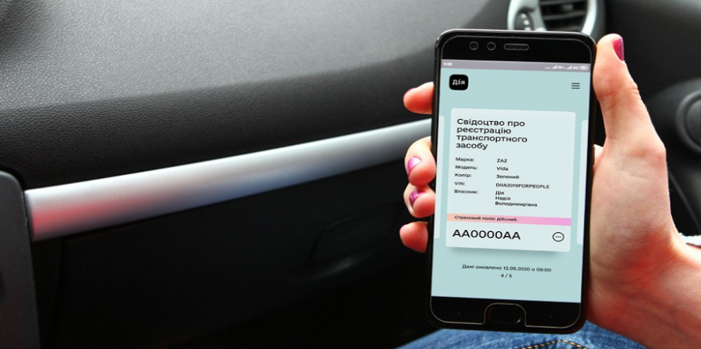

Як додати автоцивілку в дію?
auto ins, автоинс, аутоинс, ауто инс, autoins, автоинс, авто инс, автоінс, авто інс, ауто інс,
Не хвилюйтесь, якщо ваш поліс автоцивілки не з'явився в Дії одразу.
Ось декілька причин:
Оновлення бази даних
Інформація в Дії оновлюється раз на добу. Тож ваш поліс може з'явитися не одразу, а протягом 24 годин.
Не всі поліси потрапляють до бази
Дія показує лише ті поліси, які зареєстровані в МТСБУ.
Переконайтеся, що ваш поліс зареєстрований в МТСБУ.
В застосунку поліс страхування відображається у власника та належного користувача автомобіля.
Технічні помилки
Іноді через технічні проблеми поліс не відображається в Дії.
Якщо ваш поліс не з'явився протягом 24 годин, зверніться до служби підтримки Дії.
Що робити, якщо автоцивілки немає в Дії?
Переконайтеся, що номерний знак та інші дані в полісі та техпаспорті введені правильно.
Перевірте чинність поліса в базі МТСБУ
Дія бере інформацію про ваш поліс саме звідси.
Якщо автоцивілки немає в базі МТСБУ - вона не дійсна.
Чому обирати AUTO-INS?
Безпека:
При оформленні автоцивілки на нашому сервісі, Ваш поліс миттєво реєструється в базі МТСБУ, в чому Ви можете переконатись ще до моменту оплати. На відміну від класичних парерових бланків, які агент має вносити в базу. Тобто наявність "кольорового бланку" не гарантує наявність автоцивілки.
Економія часу:
Вам не потрібно їздити до офісу страхової компанії та стояти в чергах. Або чекати на доставку поліса.
Порівняння пропозицій:
Ви можете швидко та легко порівняти ціни та умови різних страхових компаній і обрати для себе найкращу пропозиію.
Цілодобова доступність:
Оформити поліс можна в будь-який час доби, 7 днів на тиждень.
Без комісій:
Ви платите лише за сам поліс, без жодних додаткових комісій страховим агентам.
Зручний калькулятор:
З нашим онлайн-калькулятором ви можете швидко та легко розрахувати вартість автоцивілки.
Не зволікайте, оформіть автоцивілку онлайн вже зараз!
Застрахуйте свою відповідальність – будьте впевнені на дорозі!